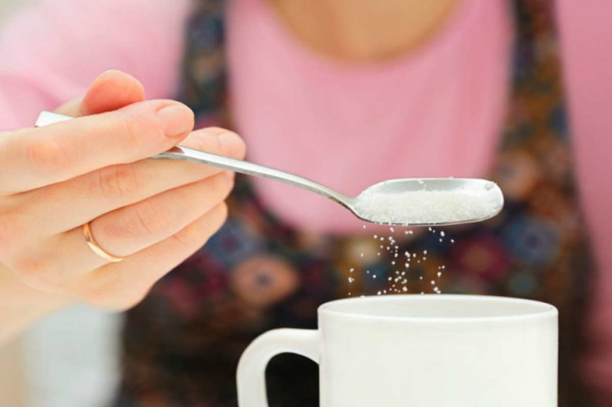

10 Amazing Ways to Maintain a Balanced Diet Chart
A balanced diet is a diet that gives your body the nutrients to function correctly. It is not a crash diet but it consists of macronutrients like protein, carbohydrates and fat along with micronutrients which include vitamins and minerals. In order to get a properly balanced nutrition, you should obtain the majority of your daily energy from fresh fruits and vegetables, whole grains, and lean proteins.
What is a balanced diet chart?
A balanced diet chart is a representation of a healthy diet chart that comprises of all the required nutrients. It includes all the food groups and ensures that we are getting everything that our body needs through our diet. It is a guideline that gives us right food choices for optimal health.
The food pyramid depicts a balanced diet chart that shows the following steps
- The base step includes whole grains such quinoa, barley, and millet.
- The second step includes fruits and veggies that are rich in vitamins and minerals.
- The third step includes protein sources like fishes and eggs.
- The last step includes fats and oils along with sugar and salt.
What is the importance of balanced diet?
A balanced diet is of utmost importance for the body to function properly. It needs the vitamins and minerals to maintain the cells, tissues, and organs. A balanced diet also helps in maintaining a healthy weight, reduces body fat, provides your body with energy, promotes good sleep, and eventually gives a feeling of well-being.
Why do we need to have a healthy balanced diet?
Our Truweight Nutritionists always recommend a healthy, balanced diet to maintain a radiant health. The most important of all is to have the right balance of vitamins and minerals, which is scientifically proven. Some of these are thiamine (vitamin B1) needed for improving metabolism found in legumes, nuts, and seeds, etc. Ascorbic acid (vitamin C) aids in iron absorption and protects the immune system; found in fruits like citrus fruits and vegetables like tomatoes, potatoes, lettuce etc. Cobalamin (vitamin B12) for making new cells, found in meat, poultry, fish, seafood, eggs, milk and milk products. Vitamin A is a fat-soluble vitamin found in foods like sweet potatoes, carrots, dark leafy greens, bell peppers, fish, liver, and tropical fruits, etc.
10 Ways to Maintain a Balanced Diet Chart
How to have a balanced diet? Follow the points below
1. Follow the correct mealtime
A diet chart comprises of 5 small meals in a day with a gap of 3 hours between each meal. A gap of more than 3 hours will increase the stress hormones cortisol that will let the body store fat in the belly. If these meals are eaten in a proper time it will keep the cortisol levels in check and thus reducing belly fat. Food eaten at the right time will also help in better digestion.
2. Be physically active during the day
If you are physically active during the day it will help you in reducing weight and you will feel less lethargic. If you are inactive and lacking in physical activity than your body requires some weight loss exercises to pump you up.
3. Maintain a list of healthy foods
Research and gather knowledge about the foods that contain protein or which foods contain carbs, and so on. This will give you an idea of the foods that are nutritious and healthy. You could additionally ask a nutritionist about it too for
4. Replace processed foods with fruits and veggies
Fruits and vegetables are the natural foods that will help to maintain a healthy diet chart for the body. Sadly, these foods have been replaced by processed foods for example, tinned vegetables or breakfast cereals being the main culprit for weight gain. Processed foods are unhealthy and contain added sugar, salt, and fat. So, include fruits and vegetables that are low in fat content aiding in weight loss.
5. Include more Proteins
If you want to lose weight, add more proteins to your diet as protein takes more time and energy to break down in the body. You can include snacks and seeds instead of chips or you can opt for a healthier source of protein from Truweight’s wide range of products. For example, shake-a-day, a whey protein drink that you can make into a fruit pudding or quinoa can be eaten instead of rice.
6. Include milk and milk products
Dairy products are the best source of calcium that is essential for healthy bones and is also necessary for regulating muscle contraction. If your calcium intake is inadequate, you might suffer from osteoporosis and various bone diseases. Dairy products that are rich in calcium are low-fat yogurt, cottage cheese, and milk. If you are a person who dislikes dairy products then, have these dairy-free calcium supplements for your diet.
7. Have the required carbs
It is wise to choose the required amount of carbs needed for the body. Most of the carbohydrates are present in plant foods like pulses, cereals, and millets. Your healthy diet chart should mainly consist of complex carbohydrates such as whole grains, brown rice, oats, lentils, fruits, and veggies. They are also rich in fiber which keeps you feeling fuller for a longer period of time.
8. Reduce the fat intake
Decrease the intake of fats in your diet as too much of it can lead to weight gain and other related health problems. The required amount of fats needed for the body totally depends on the foods that you are consuming. Know the fats that contain essential fatty acids that protect the heart and improve the functions of the immune system.
9. Cut down sugar in your tea/coffee
Sugar is the lead villain to increase your waistline in the body. Sugar is addictive like a drug to most of the people, who like to add the sweet sugar to their favorite foods. Too much consumption of sugar may cause diabetes, insulin resistance, heart disease, obesity among many lifestyle disorders.

10. Remove ‘Salt’ from your table
Eating too much salt, causes the extra water to store in your body that raises the blood pressure. So, the more salt you eat, the higher your blood pressure and the greater the strain on your heart, arteries, kidneys and brain. This can lead to heart attacks, strokes, dementia, and kidney disease.
Here, we list down the balanced diet chart for women and men. This balanced diet chart will let you understand how much to eat during the day for a better health.
4 Major Components of a Healthy Balanced Diet
Looking for a balanced diet menu? Here is the list of the five major food groups consisting of vitamins and minerals, protein, carbohydrates, and fats that constitutes a balanced diet chart.
1. Vitamins and Minerals
These micronutrients support metabolism, nerve and muscle function, bone maintenance and cell production. Fruits and vegetables are the primary sources of vitamins and minerals including potassium, dietary fiber, folate (folic acid), vitamin A, and vitamin C. Simple carbohydrates like glucose and fructose are also found in fruits and vegetables. Opt for fresh fruits instead of fruit juices, know why fresh fruits are better than fruit juices?
Similarly, vegetables such as dark green leafy veggies should be included in your meal. Adding a variety of veggies like broccoli, spinach, beans, lettuce, etc to your meal will help you in getting the bountiful nutrients required for the body.
2. Protein
Protein is required to help your body repair cells and make new ones. Protein is also important for growth and development during the early stages of childhood, adolescence, and pregnancy. About 30 to 35% of your daily diet should consist of protein found in pulses like whole grams, dals, chickpeas, peas, lentils, beans, peanuts, milk, eggs, fish, and meat.
3. Carbohydrates
If you have been a health enthusiast, then you have been carefully monitoring or skipping carbs in your diet altogether but, guess what? Carbohydrates are the main source of energy for the voluntary as well as involuntary functions of the body. Consume carbohydrates which include whole grains such as brown rice, wheat, ragi, jowar, bajra, oatmeal, quinoa, and potatoes among others. Hence, carbs should not be avoided and it should be a part of your daily diet.
4. Fats
Fats provide energy, store and provide vitamins, and synthesize hormones. There are three kinds of fats namely, polyunsaturated such as walnuts, flax seeds, etc; monounsaturated fat such as olive oil and omega-3 fatty acids such as fish oil, walnuts, etc.
Oil is one of the main ingredient used in cooking. Vegetable oil is the main villain used in cooking as it contains fat that is harmful to the body. Instead, you can go for unrefined or cold pressed oil which has a higher nutritional value than the unrefined oil.
All said about the importance of balanced diet, you need to maintain it by following a balanced diet chart. A diet chart will give a better understanding of how much food to consume and what type of food you are supposed to eat. A balanced diet chart is a solution to irregular eating habits and dealing with weight gain problems. In order to follow a balanced diet chart one needs to prepare it and stick to it.